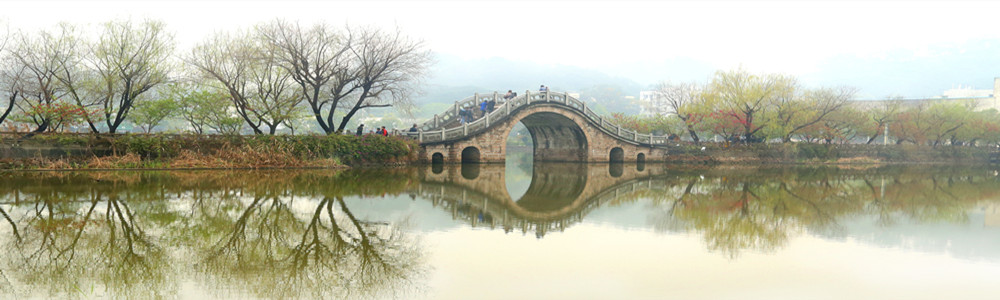
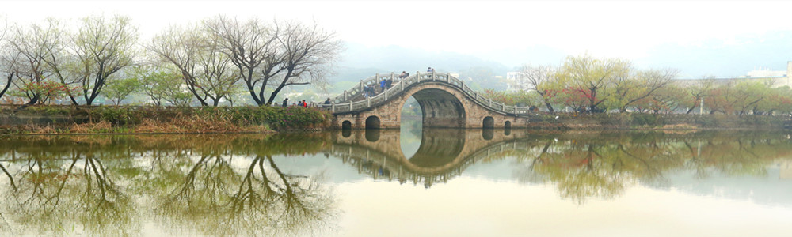

福建农林大学地处海上丝绸之路门户、首批对外开放的沿海港口城市——福州，是一所以农林学科为优势和特色，理、工、经、管、文、法、艺等多学科协调发展的省属重点大学，是农业农村部、国家林草局与福建省政府共建高校，福建省一流大学建设高校
福建农林大学的前身是成立于1936年的福建协和大学农科和成立于1940年的福建省立农学院。1952年，两大文脉汇集成立福建农学院。1958年秋，省委省政府以福建农学院森林系为基础，成立福建林学院。2000年10月，原福建农业大学和原福建林学院合并组建新的福建农林大学。
学校设有20个以全日制本科生和研究生培养为主的学院以及1个独立学院，现有全日制本科生2.2万人，研究生6000多人。现有本科招生专业71个，获批卓越农林人才试点专业8个、国家一流本科专业8个、国家级专业综合改革试点项目2个、国家级特色专业9个、国家级实验教学示范中心2个、国家级精品在线开放课程14门、国家虚拟仿真实验教学项目4个。学校入选教育部首批创新创业50强高校，全国高校实践育人创新创业基地。在“挑战杯”全国大学生课外学术科技作品竞赛和“创青春”全国大学生创业大赛中，先后七次捧得“优胜杯”。
学校现有教职工3059人，专任教师1799人，有中国科学院院士1人、全国杰出专业技术人才2人，国务院学科评议组成员5人，教育部“长江学者”8人，万人计划人才8人，国家杰出青年科学基金获得者5人，国家优秀青年科学基金获得者7人，国家百千万人才工程人选13人，国家级有突出贡献的专家9人，科技部创新人才推进计划人选8人，教育部新世纪优秀人才支持计划5人，享受国务院特殊津贴30人。拥有国家级教学团队2支、教育部创新团队1支、科技部“创新人才推进计划”创新团队2支和农业农村部创新团队2支、国家林业和草原局科技创新团队1支，2个基地入选国家“高等学校学科创新引智计划”（“111”计划）。
学校现有12个博士学位授权一级学科，27个硕士学位授权一级学科，11个博士后科研流动站。有1个国家重点学科、1个国家重点培育学科、2个农业农村部重点学科和7个国家林草局重点学科。在全国第四轮学科评估中，有17个学科进入榜单，其中植物保护、林学、生态学和风景园林学4个学科进入前10%-20%。6个学科入选福建省高峰学科，12个学科入选福建省高原学科。
学校建有国家工程技术研究中心2个、省部共建国家重点实验室1个、省部共建2011协同创新中心1个、国家地方联合工程实验室（研究中心）2个、教育部国际合作联合实验室1个、教育部重点实验室（工程研究中心）4个、教育部区域和国别研究中心1个、农业农村部重点实验室2个、国家林业和草原局重点实验室3个。“十二五”以来，学校主持科研计划项目5000多项，科研经费超15亿元。获国家科技进步奖二等奖5项，其中主持获国家科技进步奖二等奖3项。获部省级自然科技奖164项、社会科学优秀成果奖30项，其中，主持获部省级科技奖104项。在全球破译小菜蛾基因组、香荚兰基因组、菠萝基因组、龙眼基因组、甘蔗基因组、四倍体栽培种花生基因组、睡莲基因组，首次解析了植物蓝光受体原初光反应的分子机制。
学校是菌草技术发明单位，选育出的甘蔗、黄麻、杉木、甘薯、花生、茶叶、蔬菜等新品种和形成的实用技术成果推广覆盖全国主要产区。依托科技部、教育部批准的新农村发展研究院，构建产学研紧密结合的农村科技推广服务模式，参加“中国海峡项目成果交易会”连续多年获得优秀组织奖。
学校是教育部“接收中国政府奖学金来华留学生院校”，有来自近50个国家200余名留学生在校攻读学位。学校率先对台湾开展单独招生，与台湾中兴大学、台湾海洋大学等开展6个闽台人才联合培养项目，与加拿大戴尔豪斯大学、加拿大英属哥伦比亚大学等高校联合举办4个中外合作办学项目，与美国、加拿大、德国、澳大利亚等国的知名高校开展20余个学生联合培养和交流互换项目，学生还可申请国家留学基金委创新型人才培养项目、乡村振兴项目、国际组织项目等资助公派出国留学。学校还与南非德班理工大学共建孔子学院。
福建农林大学校园三面山林环绕，风景秀丽，鸟语花香。学校连续三年获评全国文明单位。校园占地4800余亩，另有科教基地1178亩，教学林场4.59万亩，资产总值37.7亿元。图书馆馆藏纸质图书（含期刊装订本）299万册。拥有电子图书（含电子期刊）331万册。
（数据统计截止2020年6月）


 闽公网安备35010402350912号，网络安全等级保护备案编号35011943059-00001
闽公网安备35010402350912号，网络安全等级保护备案编号35011943059-00001